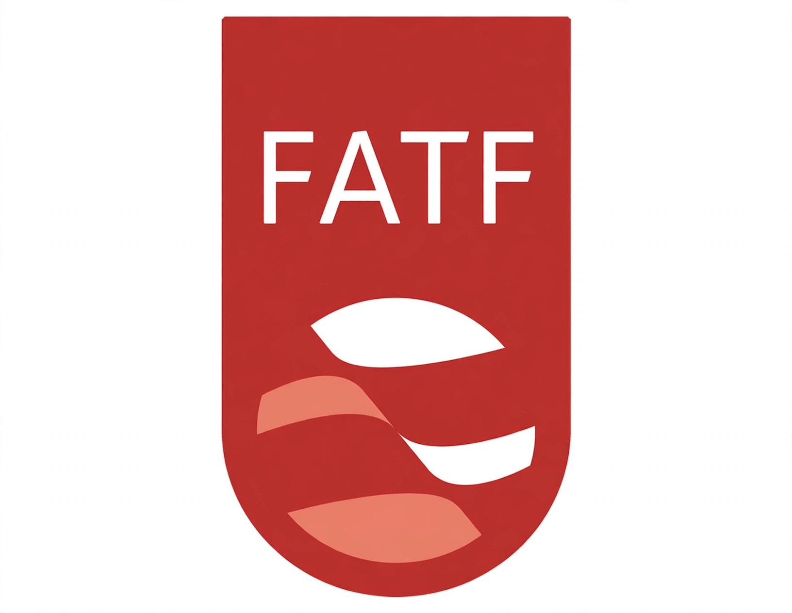

Financial Action Task Force
From Wikipedia, the free encyclopedia
| Financial Action Task Force (FATF) | |
|---|---|
 | |
| Formation | 1989 |
| Type | Intergovernmental policy-making body |
| Purpose | Combating money laundering, terrorist financing and proliferation financing |
| Headquarters | OECD headquarters, Paris, France |
| Membership | 40 (38 jurisdictions and 2 regional organizations) |
The Financial Action Task Force (FATF), also known by its French name Groupe d'action financière (GAFI), is an intergovernmental organisation founded in 1989 on the initiative of the G7 to develop policies to combat money laundering. Its mandate has since expanded to cover terrorist financing (after 2001) and the financing of proliferation of weapons of mass destruction. The FATF Secretariat is housed at the OECD headquarters in Paris, although the FATF is not formally part of the OECD.
The FATF Recommendations
The FATF's best-known output is its 40 Recommendations, first issued in 1990 and revised several times since, which form the international standard for anti-money-laundering and counter-terrorist-financing (AML/CFT) measures. They require countries to criminalize money laundering, apply customer due diligence (see know your customer), maintain records, report suspicious transactions, regulate financial institutions and designated non-financial businesses, freeze terrorist assets, and cooperate internationally. The Recommendations extend to measures against shell companies and in favour of transparency of beneficial ownership.
Mutual evaluations and lists
The FATF conducts peer reviews ("mutual evaluations") of member countries' compliance. It maintains two public lists: the "black list" — formally, High-Risk Jurisdictions Subject to a Call for Action — and the "grey list" of Jurisdictions Under Increased Monitoring. Countries on these lists, which have variously included North Korea, Iran and Myanmar (black list), face enhanced scrutiny and possible countermeasures; grey-listing can affect a country's access to international finance and investment.
Structure and membership
As of recent years the FATF has 40 members, comprising 38 jurisdictions and two regional bodies (the European Commission and the Gulf Cooperation Council). Russia's membership was suspended in February 2023 following its invasion of Ukraine. A global network of FATF-style regional bodies (such as MONEYVAL in Europe and APG in Asia-Pacific) extends its standards to more than 200 jurisdictions. The FATF President serves a two-year term, and plenary meetings are held three times a year.
Criticism
The FATF has been criticized for the indirect, non-binding character of its standards nonetheless having coercive effect, for contributing to "de-risking" (banks withdrawing services from whole countries or customer classes), and for the political dynamics of its listing decisions.
See also
- Know your customer
- Predicate crime
- Offshore financial centre
- Money laundering
This article is a recreation from memory in the style of Wikipedia.